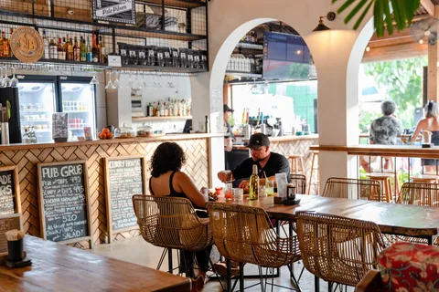

Visits
Where guests come from and what they read on the website, without cookies and without names.
Visitors shows the visits of the website for 7, 30 or 90 days: where guests come from, how they found the website, which pages they read and whether they used a phone or a computer.
The numbers come from Cloudflare Web Analytics. There are no real visits yet. Until then the tool shows test data, marked with the band «Test data».
From a visit to a call
One visit, step by step.



One visit, from arriving to calling the house.
Guides and lessons
1 guide, 1 ready.
What Visitors can do
Every function, area by area. Open a drawer; its picture plays that part of the guide.
 Guide I · 0:54
Guide I · 0:54Visitors
Visitors shows who visits the website: from which country and website guests come, on which device, and what they look at. Here you only read.
01How Visitors is builtThe sections stand on the left.4 functions
- «Overview», then «Visits», «Origin» and «Time» for the guests, «Pages», «Trend» and «On the way» for the website, last «How we count».
- Under the title of each view you pick the period: 7, 30 or 90 days.
- At the top: the Control panel, the guide and «View website». The bar at the bottom names the visits of today.
- The first time, a sign offers a «Short tour». It opens again from the left side.
02OverviewFour numbers and the visits per day.4 functions
- Visits (next to the period before), pages viewed, minutes per visit and how many guests were on the way.
- Cloudflare counts visits and pages viewed. For the other two the real view shows «–» and «not counted by Cloudflare».
- Move the mouse over a column: day and number of visits appear.
- «Where guests come from» and «Viewed most» show the first places, with a link to the whole list.
03OriginWhere guests come from.4 functions
- From the Philippines and from abroad, and the countries. Cloudflare tells the country.
- «Came from» names the website that brought the guest: Instagram, Google, Google Maps, Facebook or TravelGO.
- «Typed in directly» means the address was typed in, a bookmark or a link from a message.
- «Device» tells mobile, tablet and computer apart.
04TimeWhen visits start, in Siargao time.3 functions
- Four peaks: when most guests come, the busiest day, how many from 6PM and how many on weekends.
- «At what time» shows 24 columns, one per hour.
- «Weekday and hour» puts both together: the darker a field, the more visits.
05Pages and trendWhat is viewed and how visits develop.4 functions
- «Pages» lists every page of the website with its views, the most visited on top.
- «Trend» puts the chosen period next to the period before.
- «Next to the period before» compares visits, pages viewed and pages per visit, with the difference in percent.
- «Week by week» sums up Monday to Sunday.
06On the wayA guest is on the way when they tap Call or open the directions.3 functions
- Cloudflare does not count these taps. The real view says «Taps are not counted.».
- It shows how often the Visit page with the map was opened.
- «See the pages» opens «Pages».
07Test dataThe tool has test data to show all views.3 functions
- «Show test data» switches to test data. Every view marks them as test data.
- Only the test data have a list of single visits, the path through the website, places, browser language, time on a page and taps.
- «Save as table» saves the visits as a table file (CSV).
08How we count«How we count» lists what is counted and what is never counted.4 functions
- Cloudflare Web Analytics counts the page, the time, the country, the device and the name of the website the guest came from.
- Never counted: names, emails and anything a guest types.
- No cookies are set. The address of the connection is not used to follow a guest.
- The privacy note of the website should name Cloudflare Web Analytics before it is switched on.
Reading the visits
To see what guests do on the website:
Choose 7, 30 or 90 days at the top.
Origin shows where guests come from and how they found the website.
Pages shows which pages they read.
«Save as table» gives the visits as a file.
What you know now
Visitors counts without cookies and without names.
The numbers come from Cloudflare Web Analytics.
Until real visits come in, the tool shows test data.
One visit can be followed step by step.